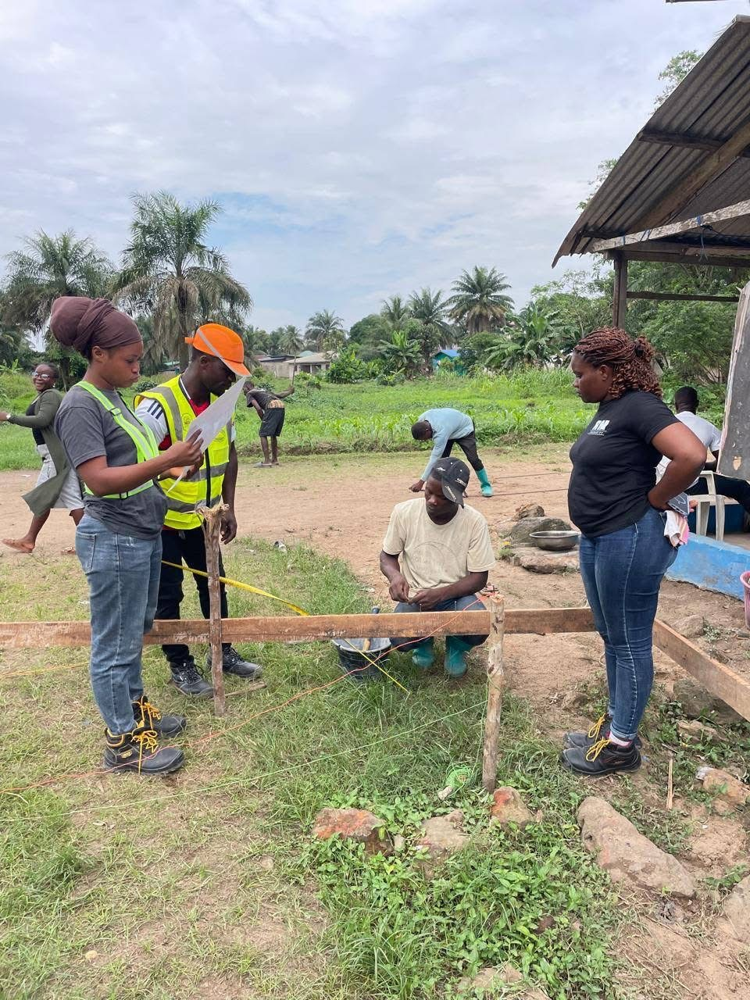
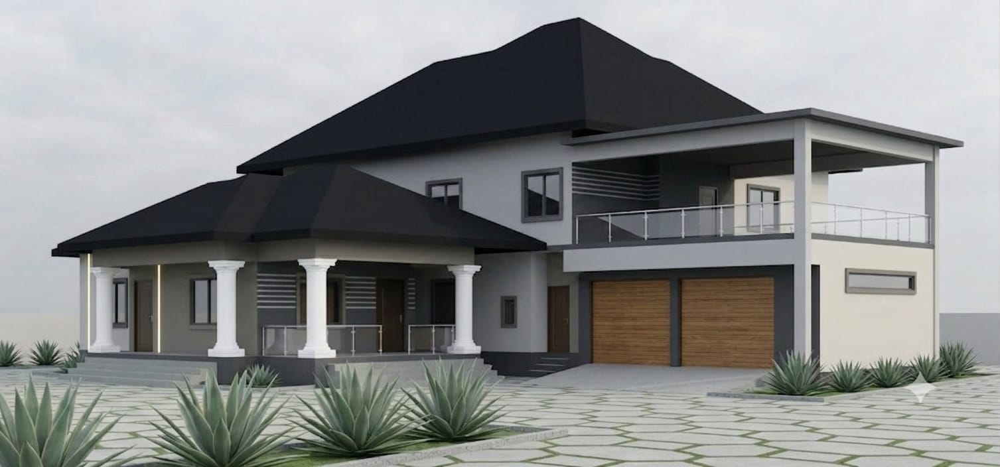
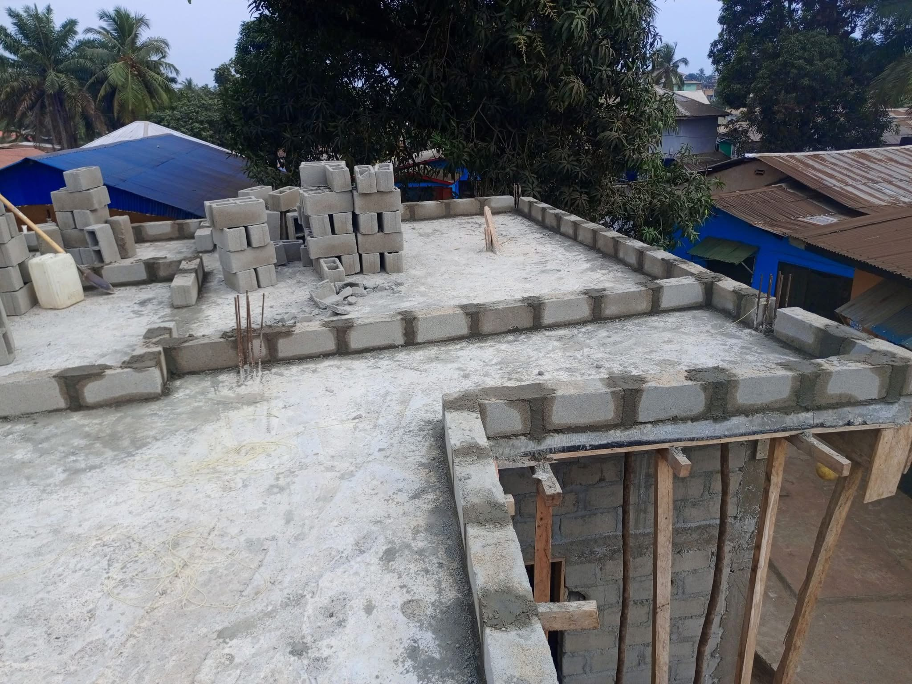
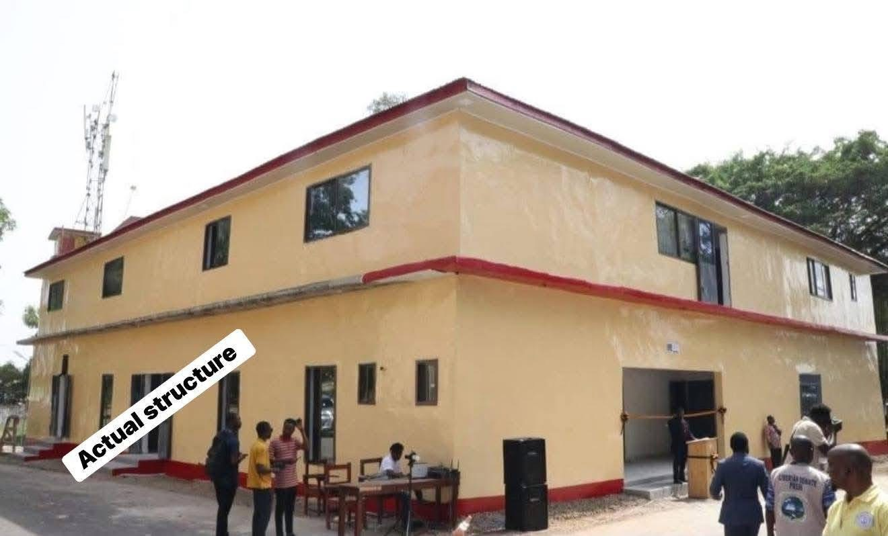
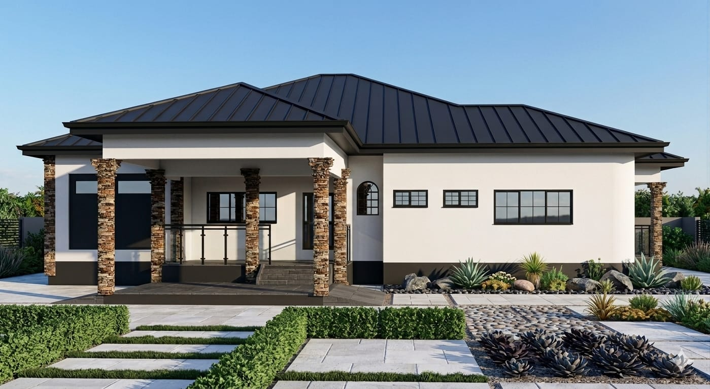
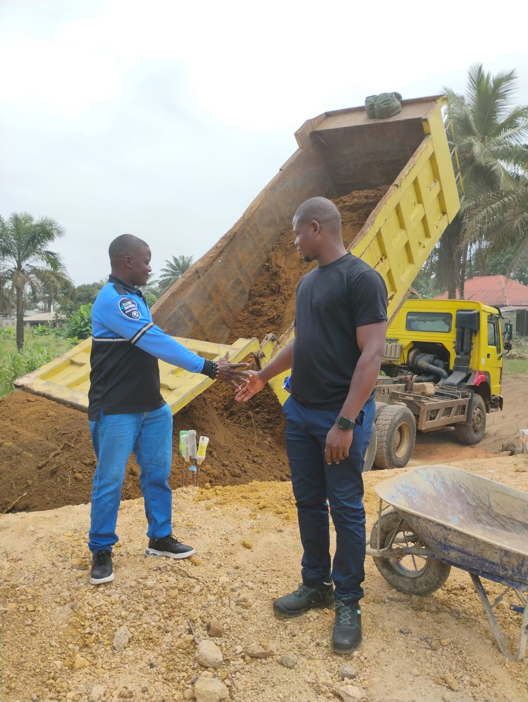
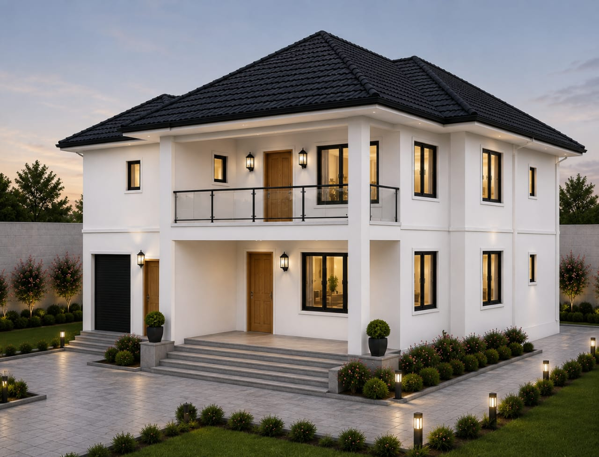

01Design & Site Preparation
Site clearing, surveying, setting out, excavation and earthworks.
Ask about this service ↗Design, site preparation, structural works, building finishes, renovation, and bridge engineering.
Explore our capabilities across building and civil construction.

01Site clearing, surveying, setting out, excavation and earthworks.
Ask about this service ↗
02Foundations, reinforced concrete, columns, beams, slabs and masonry.
Ask about this service ↗
03Roofing, truss installation, doors, windows and waterproofing.
Ask about this service ↗
04Electrical, plumbing, ceilings, flooring, tiling and painting.
Ask about this service ↗
05General repairs, remodeling, finishing and ongoing building maintenance.
Ask about this service ↗
06Surveys, structural design, bridge foundations, decks, drainage and rehabilitation.
Ask about this service ↗
Our services span the full construction process, allowing clients to discuss both early-stage planning and on-site execution with our team.
Project scope and availability are confirmed during consultation.
Start a conversation ↗Tell us what you are planning. Our team is ready to discuss the next steps.